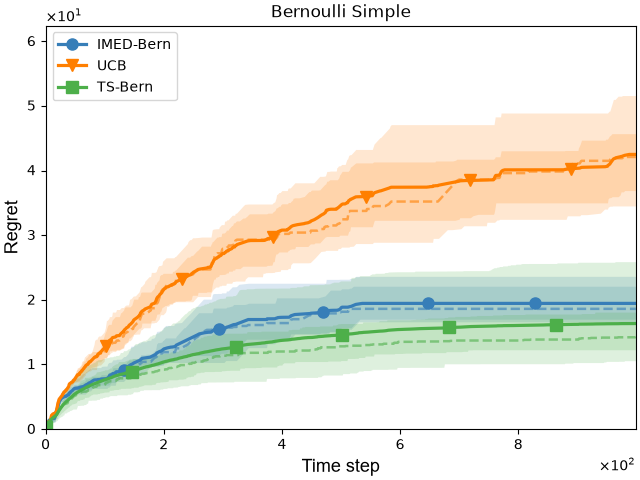
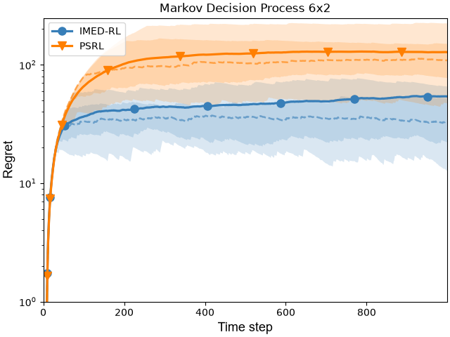

Interaction settings
Browse stochastic and adversarial bandits, as well as Markov decision processes with state and transitions.
The Statistical Reinforcement Learning Toolkit
An open-source Python library for bandits and reinforcement learning. Choose a setting, run an experiment, and compare algorithms across repeated runs.
Run your first experimentStatRL is organised around the learning problem, not the algorithm. The setting defines what information the learner gets, when it gets it, and which environments and algorithms can be used together.
Browse stochastic and adversarial bandits, as well as Markov decision processes with state and transitions.
Compare agents such as IMED, UCB and Thompson sampling within a compatible setting.
Run a simple Bernoulli bandit or use RiverSwim to study exploration when actions affect future states.
Run independent replicates in parallel and compare each agent’s cumulative reward against an oracle.
See how regret varies across runs. Plots show mean and median curves alongside empirical quantile bands.
Start from a runnable example, implement your own agent, or contribute to the MIT-licensed project.
Start with the assumptions of your problem: how rewards are generated, when the agent receives feedback, and whether actions change the state.
Learn without knowing the horizon. Includes Bernoulli environments and agents such as IMED, UCB and Thompson sampling.
Tell the learner the total number of rounds in advance. Wrappers let you use compatible anytime agents and environments.
Choose actions in batches and receive feedback at the end of each batch rather than after every action.
Model relationships between arms with kernels, so observations at one arm can inform estimates at nearby arms.
Study online decisions with Lipschitz-structured payoffs that can vary from round to round.
Choose actions that affect rewards and future states. Benchmarks include RiverSwim and randomly generated finite MDPs.
Explore spatial MDPs through four-room layouts and walls. This setting is still experimental.
Run agents on the same task and measure cumulative regret against an oracle baseline. Repeated runs let you compare both typical performance and variability.

IMED, UCB, and Thompson sampling on a stochastic bandit.

IMED-RL and PSRL compared on a logarithmic regret scale.
How to read the plots: Solid lines with markers show the mean; dashed lines show the median. Shaded bands span the 25th–75th and 10th–90th percentiles across runs. They show variability, not confidence intervals.
Install StatRL with Python 3.14 or newer, then run IMED on a three-armed Bernoulli bandit and compare its score against the best-arm oracle.
pip install statrlfrom statrl.settings.bandits.stochastic.anytime.agents.IMED import IMED
from statrl.settings.bandits.stochastic.anytime.agents._Oracle import Oracle
from statrl.settings.bandits.stochastic.anytime.envs import parametric
from statrl.settings.bandits.stochastic.anytime.interaction import (
BanditInteraction,
)
from statrl.settings.utils import klBern
env = parametric.BernoulliBandit([0.2, 0.9, 0.5])
agent = IMED(env.number_arms, klBern)
interaction = BanditInteraction()
scores = interaction.run(env, agent, horizon=2000)
oracle_scores = interaction.run(env, Oracle(env), horizon=2000)
regret = oracle_scores - scores
print(f"Cumulative regret: {regret[-1]:.1f}")The goal is to help practitioners choose a setting and an algorithm that match their problem, then compare their options on a benchmark they can reproduce.
Browse the catalogue, compose agents and environments, and evaluate performance across repeated runs.
Get startedThe repository includes an early playground prototype. A future service could help practitioners find compatible algorithms, try them in a browser, and interpret the results.
View the prototype code